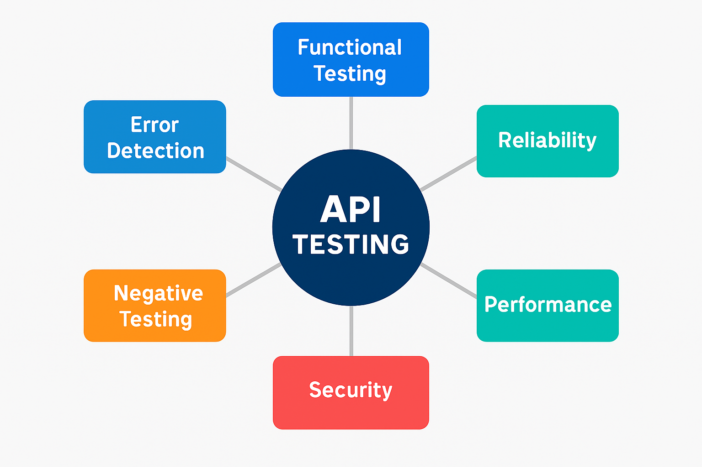

API testing validates the communication between software systems. It ensures data flows correctly, securely, and efficiently—without relying on a UI. In real-world scenarios, APIs power everything from mobile apps to banking systems
API testing is primarily classified as functional testing, as its core purpose is to verify whether the API performs its intended operations correctly and consistently. This includes validating business logic, input/output handling, and response accuracy. However, depending on the test objectives, API testing can also encompass non-functional testing types:
Performance Testing Evaluates how quickly and reliably the API responds under various load conditions. Example: Stress testing a payment API during a festival sale to ensure it handles 10,000 concurrent transactions without degradation.
Security Testing Ensures the API is protected against unauthorized access, data leaks, and injection attacks. Example: Validating that a DELETE /user/{id} endpoint is accessible only to admin roles and blocks SQL injection attempts.
Reliability Testing Confirms that the API delivers consistent results across repeated calls and edge scenarios. Example: A weather API should return accurate temperature data for the same city across multiple requests.
Scalability Testing Assesses how well the API scales with increasing data volume or user load. Example: Testing a search API with a growing product catalog to ensure response time remains acceptable.
Interoperability Testing Verifies that the API works seamlessly across platforms, devices, and third-party integrations. Example: Ensuring a REST API returns consistent JSON responses when accessed via mobile, desktop, and IoT devices.
API testing focuses on the backend logic, while UI testing validates the user interface. Their differences include:
| Aspect | API Testing | UI Testing |
|---|---|---|
| Scope | Validates backend systems and business logic. | Tests user interface interactions. |
| Speed | Faster since it bypasses the graphical interface. | Slower due to rendering processes. |
| Reliability | API tests are more stable; less prone to flaky results caused by UI changes. | Prone to instability if UI elements change. |
| Example | Verifying a “createOrder” API works correctly. | Testing if the “Place Order” button functions properly. |
The URL paths where APIs are accessed.
Example:
GET https://api.example.com/users/123Tip: Always document endpoints with required parameters and expected responses.
Define the type of operation the API performs:
Tip: Ensure the API adheres to RESTful conventions.
?userId=123Tip: Validate edge cases like missing, null, or invalid values.
APIs return structured data and HTTP status codes like:
200 OK201 Created400 Bad Request401 Unauthorized500 Internal Server ErrorTip: Test all possible response scenarios, including error handling.
Carry metadata like content type and authentication tokens.
Example:
Authorization: Bearer <token>Tip: Validate headers for correctness and completeness.
Validate API behavior by checking:
Tip: Use tools like Postman, REST Assured, or JSON Schema Validator for automated assertions.
APIs often require secure access:
Tip: Test role-based access and token expiry scenarios.
Measure response time, throughput, and stability under load.
Example: Ensure
GET /weatherTip: Use JMeter or Gatling for load and stress testing.

HTTP defines these standard status codes that can be used to convey the results of a client’s request. The status codes are divided into five categories.
| "Status Code" | "Description" |
|---|---|
| "1xx: Informational" | "Communicates transfer protocol-level information." |
| "2xx: Success" | "Indicates that the client’s request was accepted successfully." |
| "3xx: Redirection" | "Indicates that the client must take some additional action in order to complete their request." |
| "4xx: Client Error" | "This category of error status codes points the finger at clients." |
| "5xx: Server Error" | "The server takes responsibility for these error status codes." |
Tip: You can refer to HTTP Status Codes or Rest API Response Codes for full link of response Codes.
Functional testing ensures that an API behaves as expected when performing its core operations. It focuses on verifying endpoint responses, input handling, business logic enforcement, and service interactions.
Check whether each API endpoint returns the correct response for a given request.
Example: Validate that
GET /user/{id}Assess how the API processes different types of input data:
Example: Test a date filter API to ensure it rejects invalid formats like
99-99-9999Verify that the API correctly applies the intended business rules and restrictions.
Example: Confirm that
POST /applyDiscountEvaluate how the API communicates with dependent systems or third-party services.
Example: When calling a payment processor, ensure the API handles success, failure, and timeout scenarios gracefully.
Tips:
• Use data-driven testing to validate multiple input combinations.
• Automate functional tests with tools like REST Assured or Postman for efficiency.
Validating API responses ensures that the returned data is accurate, complete, and conforms to expectations. This helps catch issues early and improves reliability across integrations.
Confirm that the API returns the correct HTTP status code for each scenario.
200 OK404 Not Found500 Internal Server ErrorCheck that the response contains the expected fields and values.
Example: For a user API, verify that fields like
nameemailageEnsure the structure of the response matches the defined schema (e.g., JSON Schema).
Tip: Use tools like
JSON Schema ValidatorAjvVerify that the returned data matches what’s stored or expected.
Example: If
GET /product/{id}Check that error responses are clear, consistent, and secure.
Example: If a required field is missing, the API should return a message like
"Missing parameter: email"Tip: Include assertions for all critical fields to avoid missed validations during regression testing.
Security testing ensures that APIs are protected against unauthorized access, data leaks, and malicious attacks. It validates authentication, authorization, data integrity, and input sanitization.
Verify that only authenticated users can access protected endpoints.
Example: Ensure
GET /account401 UnauthorizedConfirm that users can only perform actions permitted by their roles.
Example: Validate that a regular user cannot access
DELETE /admin/user/{id}Test for injection vulnerabilities by sending malicious payloads.
Example: Attempt SQL injection via query parameters and ensure the API blocks it.
Validate how the API handles expired or revoked tokens.
Example: Ensure that a revoked JWT no longer grants access to protected resources.
Check if the API restricts excessive requests to prevent abuse.
Example: Send 100 requests in rapid succession and confirm the API returns
429 Too Many RequestsEnsure sensitive data is encrypted in transit (HTTPS) and at rest.
Example: Inspect headers and payloads to confirm no plain-text passwords are exposed.
Tips:
• Use tools like OWASP ZAP, Postman, and Burp Suite to automate and simulate security attacks.
• Include both manual and automated security tests for more test coverage.
Interoperability Testing tests if the API work correctly with other systems, platforms, and applications.
Check API compatibility across HTTP/HTTPS, SOAP or gRPC protocols.
Example: Test that a REST API supports both JSON and XML response formats, if required.
Test interactions between APIs and third-party services.
p>Example: Verify that a payment API integrates correctly with a third-party gateway like Stripe.Test API accessibility across different operating systems, browsers, or devices.
Example: Verify that the API has consistent behavior when accessed via Windows, Linux, or macOS.
Tips:
• Use mock servers to simulate third-party APIs during testing.
• Validate response handling for various supported data formats (e.g., JSON, XML).
Contract Testing tests if the API adheres to agreed-upon specifications between providers (backend developers) and consumers (frontend developers or external systems).
Use specifications like OpenAPI (Swagger) to document expected request/response structures.
Example: A GET /users API contract may specify that id is an integer and name is a string.
Verify the API provider adheres to the defined contract.
Example:Verify that all fields in the contract are present in the actual API response.
Verify that consumers can successfully interact with the API as per the contract.
Example:Check that a frontend application can parse and display data from the API correctly.
• PACT: A widely-used framework for consumer-driven contract testing.
• Postman: For validating API responses against schema definitions.
Tips:
• Treat contracts as living documents and update them for every API change.
• Automate contract testing in CI/CD pipelines to detect issues early.
API performance testing evaluates how efficiently and reliably an API responds under various conditions. It helps identify bottlenecks, scalability limits, and stability issues before they impact users.
Measure how quickly the API returns a response after receiving a request.
Example: Ensure
GET /productsEvaluate how many requests the API can handle per second or minute.
Example: Test
POST /checkoutAssess how the API performs when accessed by multiple users simultaneously.
Example: Simulate 1000 concurrent users hitting
GET /searchTest how well the API scales with increasing data volume or user load.
Example: Gradually increase load on
GET /reportsVerify that the API remains consistent and error-free under sustained load.
Example: Run a 1-hour soak test on
GET /statusCheck how gracefully the API handles failures when under stress.
Example: During a spike test, ensure
POST /paymentAssess how the API performs under expected user load and peak traffic.
Evaluate how the API handles sudden, sharp increases in traffic.
Push the API beyond its normal limits to identify its breaking point and recovery behavior.
Example:
GET /ordersPOST /loginPOST /checkoutTrack server-side resource consumption during API operations (CPU, memory, disk I/O).
Example: Monitor memory usage during a bulk upload via
POST /uploadBulkDataVerify that the API uses caching to reduce load and improve response times for frequently accessed data.
Example: Confirm that repeated requests to
GET /product/imageTips:
• Test with both expected and peak traffic to prepare for usage spikes.
• Use realistic data to simulate production-like scenarios.
• Use tools like JMeter, Gatling, or k6 to simulate load and monitor performance metrics in real time.
Postman is a powerful API testing tool that has a user-friendly interface for designing, executing, and automating API test cases. It’s widely used because it supports various API types (REST, SOAP, GraphQL) and enables both manual and automated testing.
{{base_url}}pm.expect(response.status).to.eql(200);POST /registerhttps://reqres.in/api/usersTip: Use the "Import" button to upload JSON/YAML files or provide the URL of the API specification.
o Development: baseUrl = https://dev-api.example.com
o Production: baseUrl = https://api.example.com
Tip: Use Postman’s built-in "Environment" feature to switch contexts easily.
Collections in Postman are a way to organize and automate API tests.
a. Authentication: POST /login, POST /logout
b. User Operations: GET /users, PUT /users/{id}
pm.request.headers.add({ key: "Authorization", value: `Bearer ${pm.environment.get("authToken")}` });
newman run UserManagementCollection.postman_collection.json -e DevEnvironment.postman_environment.json -r html
Tips:
• Regularly update collections to reflect API changes.
• Use descriptive names for requests and variables.
• Share collections with your team members for reuse.
•Postman allows writing test scripts using JavaScript to automate checks on API responses.
Validate the response status coodes
pm.test("Status code is 200", function () {
pm.response.to.have.status(200);
});
Verify a specific field in the response body.
pm.test("Verify user name", function () {
const responseData = pm.response.json();
pm.expect(responseData.name).to.eql("John Doe");
});
Test that the Content-Type header is correct.
pm.test("Content-Type is JSON", function () {
pm.response.to.have.header("Content-Type", "application/json");
});
Extract values from one API response and use them in another request.
pm.environment.set("authToken", pm.response.json().token);
Automate a workflow by chaining multiple API calls. Example: Use the extracted authToken in subsequent requests.
Use try-catch blocks for complex scripts to handle exceptions gracefully.
try {
// Validation logic
} catch (e) {
console.error("Error in script: ", e.message);
}
Checks Performace thresholds.
pm.test("Response time is under 500ms", function () {
pm.expect(pm.response.responseTime).to.be.below(500);
});
used for Structural validation of response bodies
const schema = {
"type": "object",
"required": ["id", "name", "email"],
"properties": {
"id": { "type": "number" },
"name": { "type": "string" },
"email": { "type": "string", "format": "email" }
}
};
pm.test("Response matches schema", function () {
pm.response.to.have.jsonSchema(schema);
});
Checks specific value from response.
pm.test("User name is John Doe", function () {
const jsonData = pm.response.json();
pm.expect(jsonData.name).to.eql("John Doe");
});
Bulk validation in paginated or list responses
pm.test("All users have valid emails", function () {
const users = pm.response.json().data;
users.forEach(user => {
pm.expect(user.email).to.match(/^\S+@\S+\.\S+$/);
});
});
for chaining request. e.g. use userId (env. variable) in next request.
const jsonData = pm.response.json();
pm.environment.set("userId", jsonData.id);
pm.test("Date is today", function () {
const jsonData = pm.response.json();
const responseDate = new Date(jsonData.date).toDateString();
const today = new Date().toDateString();
pm.expect(responseDate).to.eql(today);
});
const today = new Date().toISOString().split("T")[0]; // Format: YYYY-MM-DD
pm.environment.set("todayDate", today);
const futureDate = new Date();
futureDate.setDate(futureDate.getDate() + 7); // 7 days ahead
pm.environment.set("futureDate", futureDate.toISOString().split("T")[0]);
const randomNum = Math.floor(Math.random() * 9000) + 1000;
pm.environment.set("randomNumber", randomNum);
const randomAge = Math.floor(Math.random() * 50) + 18;
pm.environment.set("userAge", randomAge);
Generate random alphanumeric string & Use {{randomString}} in your request body or headers.
function generateRandomString(length) {
const chars = 'ABCDEFGHIJKLMNOPQRSTUVWXYZabcdefghijklmnopqrstuvwxyz0123456789';
let result = '';
for (let i = 0; i < length; i++) { result +=chars.charAt(Math.floor(Math.random() * chars.length)); } return result; }
pm.environment.set("randomString", generateRandomString(10));
Create Pre-request Script as follows:
function generateRandomString(length) {
const chars = 'abcdefghijklmnopqrstuvwxyz0123456789';
return Array.from({ length }, () => chars[Math.floor(Math.random() * chars.length)]).join('');
}
const randomEmail = `${generateRandomString(8)}@example.com`;
pm.environment.set("randomEmail", randomEmail);
{
"name": "Test User",
"email": "{{randomEmail}}"
}
Typical API test cases include:
• CRUD operations
• Authentication flows
• Pagination and filtering These help ensure your API handles real-world scenarios
Writing effective API test cases needs a methodical approach. Here are some best practices:
Study the API documentation, including endpoint definitions, request/response formats, and authentication mechanisms.
Example: For a GET /user/{id} API, understand its parameters (id), response structure, and expected error codes.
Convert the API’s functionality into testable scenarios:
o Positive test cases: Validate the expected behavior for valid inputs.
o Negative test cases: Test if the API handles invalid inputs gracefully.
o Edge cases: Test boundary values to identify vulnerabilities.
Example: For a pagination API, test scenarios include valid page numbers, invalid page numbers (negative values), and boundary values (e.g., maximum allowed page).
Create reusable test scripts for common actions like authentication or header validation.
Example: Write a reusable function to generate a valid authorization token for secure APIs.
Verify key aspects like status codes, response time, response structure, and data accuracy.
Example: Assert that the response time for GET /products is under 200ms.
Use tools like REST Assured or Postman to automate test case execution for scalability and efficiency.
Example: Automate regression tests for frequently changing APIs to minimize manual effort.
Prioritize test cases based on business impact and API complexity. High-priority features should have extensive test coverage.
POST /createUser{
"name": "John Doe",
"email": "john.doe@example.com",
"age": 30
}
Content-TypeAuthorizationPOST /createUser{
"id": 101,
"message": "User created successfully."
}
A structured template enables writing test cases that are complete, reusable, and easy to understand. Below is a suggested template:
| Field | Description |
|---|---|
| Test Case ID | Unique identifier for the test case. |
| API Endpoint | Specify the API endpoint being tested (e.g., GET /user/{id}). |
| Test Scenario | Brief description of the test objective. |
| Preconditions | Any setup required before executing the test (e.g., authentication tokens). |
| Test Data | Inputs required for the test case (e.g., query parameters or request body). |
| Test Steps | Detailed steps to execute the test. |
| Expected Result | Describe the expected API response (status codes, response body, etc.). |
| Actual Result | Record the actual response received during testing. |
| Status | Pass/Fail result of the test case. |
| Remarks | Any additional observations or notes. |
Tip: You can use tools like Excel, Jira, or test management software to document and track test cases systematically.
Understanding HTTP error codes is crucial. • 200: OK • 400: Bad Request • 401: Unauthorized • 500: Internal Server Error These codes help diagnose issues quickly
For interviews, focus on: • API testing concepts • Tools like Postman and REST Assured • Sample questions like: 'How do you validate a response?' or 'What’s the difference between PUT and PATCH?'
✅ Validate endpoints and methods ✅ Use assertions for response data ✅ Automate with CI/CD ✅ Generate HTML reports ✅ Follow clean coding practices